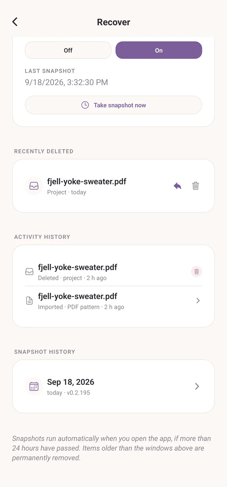
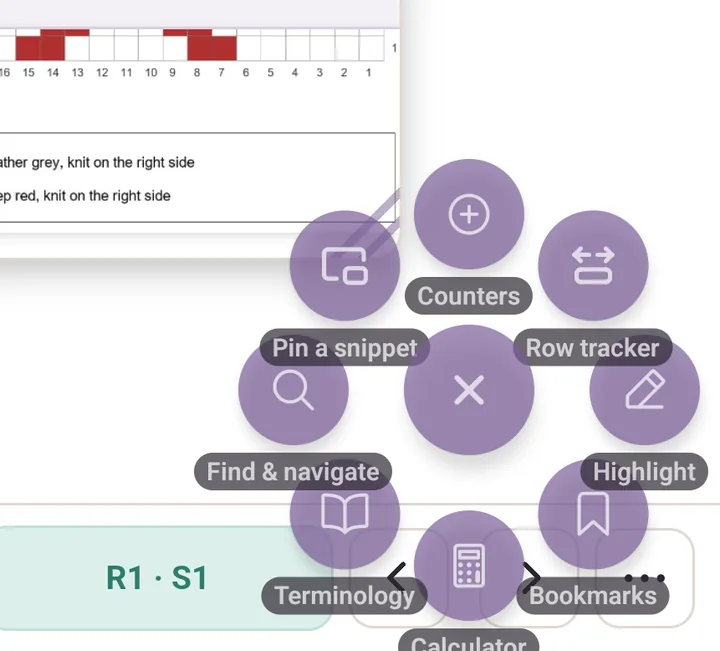
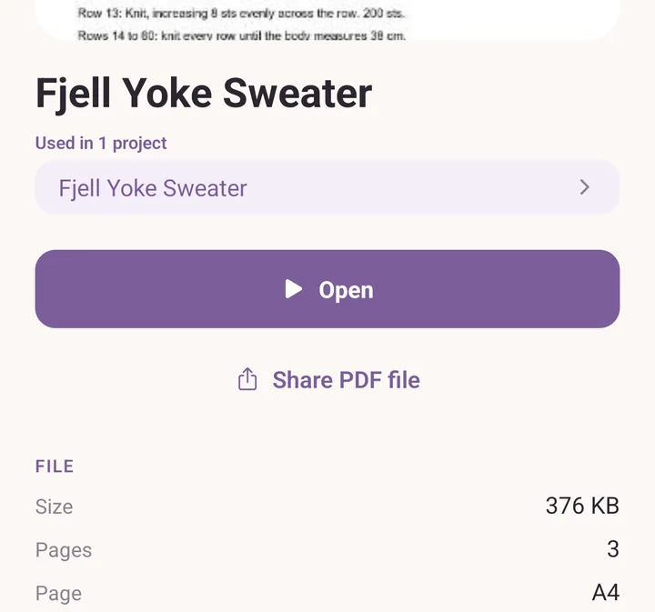

FAQ
Things that come up often, things that look like bugs but aren't, and known limitations.
On this page 15
- Does Purl upload my data anywhere?
- How do I move my data to a new phone?
- I deleted something by accident.
- Search isn't finding something I know is there.
- The Norwegian translation has a typo / awkward phrase.
- The PDF tools button is in the way.
- My drawings on a PDF vanished after I tapped Clear.
- A scan didn't recognise my yarn.
- The autofill suggestions are wrong / outdated.
- Why does the same yarn show up twice in my stash?
- My scanned yarn library has duplicates.
- Are PDFs included in backups?
- How do I share a pattern with a friend?
- Is there an iPhone or iPad version?
- A feature seems missing / I want X.
Does Purl upload my data anywhere?
No. Everything lives on your device. Purl has no account system and no cloud. You can use it on an airplane. The trade-off is that backups are your responsibility (see backups) but the app makes them simple.
How do I move my data to a new phone?
Export a .purl backup from More > Your data > Export &
import, transfer the file to the new device (Drive, email, USB,
anything works), install Purl on the new device, and import. See
backups for the step-by-step.
I deleted something by accident.
Don't panic. More > Your data > Backups & history has your back, in three sections:
- Recently deleted: anything you deleted in the last 30 days is restorable with a tap.
- Activity history: a running list of what you have added, imported, restored and deleted, so you can see what happened and when.
- Snapshot history: the app snapshots itself when you open it, at most once a day, and keeps 7 days. Useful for "I deleted ten yarns thinking they were duplicates" or "I imported a backup over my data" cases.

Search isn't finding something I know is there.
Try searching with fewer letters; the search is substring-based (so "lopi" finds "Léttlopi", "jarbo" finds "Järbo"). It also folds accents in both directions. It does not yet handle typos (so "Sandnse" won't find "Sandnes", type carefully).
The Projects, Patterns and Stash tabs each have their own search above the list. The global search, the magnifying glass in the More header, runs across everything at once: projects, patterns, yarn, equipment, PDF sticky notes, PDF bookmarks, and the terminology glossary.
The Norwegian translation has a typo / awkward phrase.
Send a note via More > Send feedback, which opens a short form in your browser. Norwegian translations are reviewed before sign-off; if something sounds wrong, it probably is.
The PDF tools button is in the way.
Drag it. The floating button is movable to wherever you want it (any corner, any edge) and it remembers its position per device.
Long-press the round button to open Tool settings, which holds the fan spacing, the tool names, and which tools show at all. Only their order lives in Settings, under PDF speed-dial buttons, behind the gear in the More header.

My drawings on a PDF vanished after I tapped Clear.
Clear asks first: This page only or All pages. If you tapped All pages, it's wiped. If you realised right after, open More > Your data > Backups & history and restore from the most recent snapshot; your annotations are part of the snapshot.
A scan didn't recognise my yarn.
The bundled catalogue covers Nordic producers. If you scanned a non-Nordic yarn (Cascade, Madelinetosh, Brooklyn Tweed, etc.), the code is unknown until you save the yarn for the first time, after which the app remembers. Scan it again later and it is recognised.
If you scanned a Nordic yarn that should be in the catalogue and isn't, that's worth feeding back. The catalogue gets richer in each release.
The autofill suggestions are wrong / outdated.
Type your own value. The suggestion list is just a helping hand. Autofill only fills empty fields when you pick from a suggestion; it never overwrites what you've typed.
If a catalogue entry is wrong (a yarn's meterage changed, a weight got reclassified), edit your version. Your edit forks into your own record; the catalogue keeps its version underneath. Send feedback so we can fix the catalogue for everyone.
Why does the same yarn show up twice in my stash?
Two reasons:
- Different dye lots. Two skeins with the same brand + name + colour but different dye lots are tracked separately because shade can vary by lot. The stash groups them under the same yarn entry.
- Different colourways. Two skeins of the same yarn line in different colours are different stash entries.
The stash list groups by brand + name first, then by colour inside, then by dye lot inside that. If you have actually two duplicate entries for the same yarn / same colour / same dye lot, merge by deleting one and adjusting the other's skein count.
My scanned yarn library has duplicates.
Open More > Barcode scanner, which is your Yarn library. If there are same-product duplicates (blank weight one time, "DK" another, or a name typo), a card at the top counts the possible duplicates and offers Merge. Their barcodes are combined and the most complete details are kept.
Are PDFs included in backups?
Yes. A .purl backup with the Patterns category ticked includes
every imported PDF file, every cover thumbnail, every drawing,
every sticky note. The backup file is correspondingly bigger.
How do I share a pattern with a friend?
For a pattern you wrote: tap it on the Patterns tab to open its
details, then tap Share pattern. It writes a .purlp file you
can email, put in Drive, or AirDrop.
For a PDF you imported: tap it on the Patterns tab, then tap Share PDF file. It hands the original PDF to your device's normal share sheet.
It works the other way round too. A PDF sent to your device from mail, a message or a file manager can be opened straight into Purl, which imports it into your pattern library.

For your scanned yarn library (so a friend doesn't have to re-scan
every yarn): More > Barcode scanner > Share library,
which writes a .purlt file.
Is there an iPhone or iPad version?
Yes. Purl is on the App Store, and the same app runs on both iPhone and iPad. The iPad is the device the layout is designed around, including Apple Pencil for drawing on patterns and on charts.
A feature seems missing / I want X.
Two places to look:
- More > What's planned: what's coming up.
- More > What's new: what shipped recently, version by version.
If your idea isn't on either, More > Send feedback is the direct line. Every note is read.